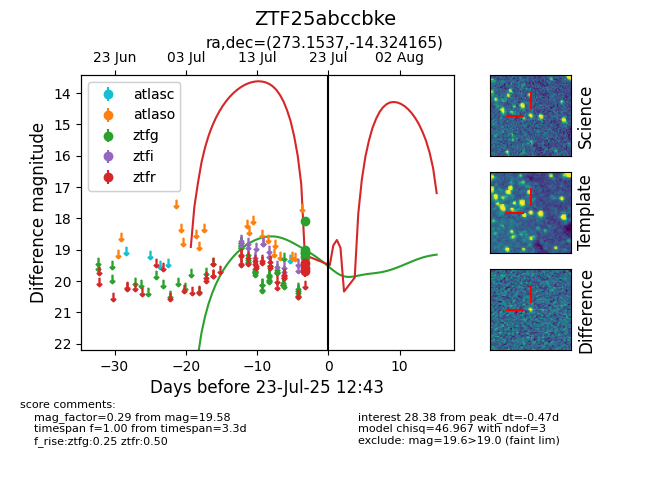

Target ZTF25abccbke at 2025-07-23 12:43, see:
FINK: fink-portal.org/ZTF25abccbke
Lasair: lasair-ztf.lsst.ac.uk/objects/ZTF25abccbke
ALeRCE: alerce.online/object/ZTF25abccbke
alt names
ZTF25abccbke (ztf,fink)
coordinates:
equatorial (ra, dec) = (273.1537,-14.32416)
galactic (l, b) = (15.7846,+1.86611)
photometry
last ztfg=19.23, ztfr=19.58
5 ztfg, 3 ztfr detections
